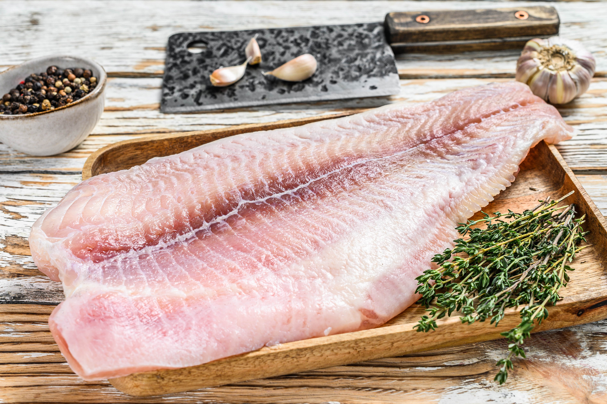

Agrargenossenschaft Finow eG
Fisch und Gemüse aus einer Zucht
☰
Home
Wir
News
Rezepte
Hofladen
Jobs
Kontakt und Impressum
Datenschutz

Die Neujahrsvorspeise:
Wels auf Carpaccio aus Roten Beten
Die Alternative:
Welsfilet mit Spargel
Der Muntermacher:
Blumenkohl aus dem Ofen
Die grüne Freude:
Mangoldpizza
Die Urlaubserinnerung:
Mediterrane Gemüsepfanne